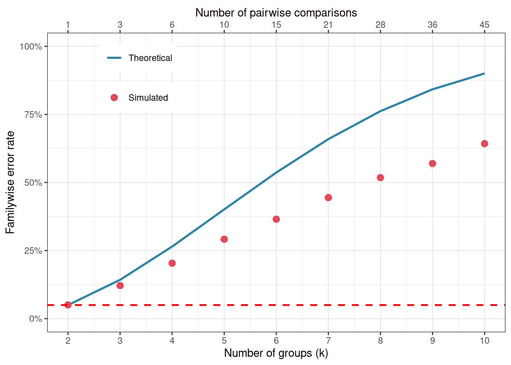
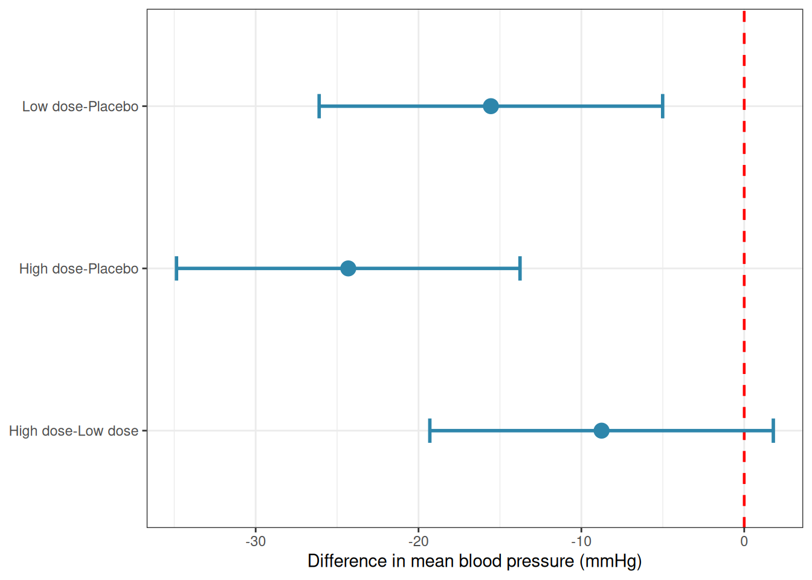
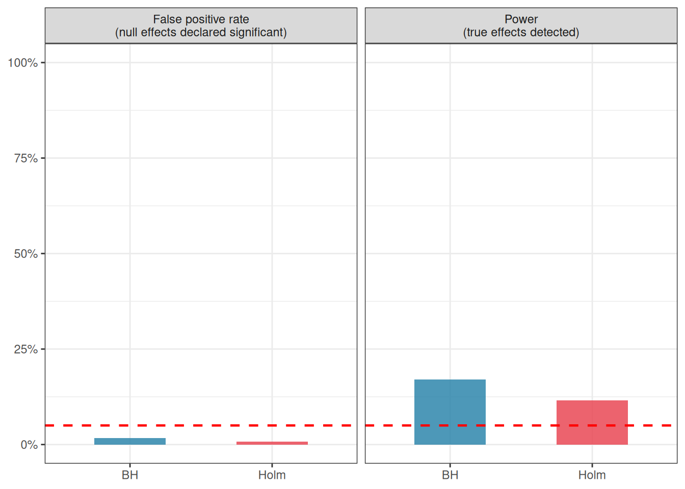

The \(F\) test in ANOVA answers a single, global question: do the group means differ? When the answer is yes, the natural follow-up is: which groups differ from which? This is where multiple comparisons enter the picture and where a surprising number of otherwise careful analyses go wrong.
The problem is not the comparisons themselves, it is doing many of them at once without accounting for the fact that when you ask many questions of the same data, chance alone will eventually hand you a significant answer.
This chapter explains why, introduces the main corrections available in R, and gives practical guidance on when each is appropriate.
4.1 The Multiple Testing Problem
4.1.1 One Test, One Risk
When you perform a single hypothesis test at \(\alpha = 0.05\), you accept a 5% probability of a false positive which is 5% probability of declaring a difference significant when none truly exists. This is the Type I error rate, and it is exactly what \(\alpha\) controls.
4.1.2 Many Tests, Compounding Risk
Now suppose the ANOVA is significant and you want to compare all pairs of groups. With \(k = 3\) groups, there are three pairwise comparisons: Placebo vs Low dose, Placebo vs High dose, and Low dose vs High dose.
If you run each as a separate \(t\)-test at \(\alpha = 0.05\), the probability of making at least one false positive across the three tests is no longer 5%. Assuming the tests are independent, the probability of making no false positives across \(m\) tests is \((1 - \alpha)^m\), so the probability of at least one false positive is:
\[P(\text{at least one false positive}) = 1 - (1 - \alpha)^m\]
For three tests: \(1 - (1 - 0.05)^3 = 0.143\). For five tests: \(0.226\). For ten tests: \(0.401\). The more comparisons you make, the more likely you are to find something significant by chance alone.
This inflated error rate across a family of tests is called the familywise error rate (FWER), and controlling it is the central goal of multiple comparison procedures.
The simulation below makes this concrete. We generate data where all groups truly have the same mean, no differences exist, and count how often at least one pairwise \(t\)-test returns \(p < 0.05\):
Code
library(furrr)library(future)library(ggplot2)set.seed(42)n_sim<-5000alpha<-0.05n<-20# observations per group# Range of group numbers to testk_vals<-2:10fwer<-future_map_dbl(k_vals, function(k){# inner loop is sequential, parallelism at the k level onlyat_least_one_fp<-map_lgl(seq_len(n_sim), function(i){y<-rnorm(k*n)group<-factor(rep(paste0("G", 1:k), each =n))df<-data.frame(y, group)pairs<-combn(levels(group), 2)p_vals<-apply(pairs, 2, function(g){t.test(y~group, data =df[df$group%in%g, ], var.equal =TRUE)$p.value})any(p_vals<alpha)})mean(at_least_one_fp)}, .options =furrr_options(seed =TRUE))plan(sequential)# Theoretical FWERm_vals<-choose(k_vals, 2)fwer_theory<-1-(1-alpha)^m_valsfwer_df<-data.frame( k =k_vals, m =m_vals, fwer_sim =fwer, fwer_theory =fwer_theory)ggplot(fwer_df, aes(x =k))+geom_line(aes(y =fwer_theory, linetype ="Theoretical"), colour ="#2E86AB", linewidth =1)+geom_point(aes(y =fwer_sim, shape ="Simulated"), colour ="#E84855", size =3)+geom_hline(yintercept =alpha, linetype ="dashed", colour ="red", linewidth =0.8)+scale_y_continuous(limits =c(0, 1), labels =scales::percent_format(accuracy =1))+scale_x_continuous(breaks =k_vals, sec.axis =sec_axis(~choose(., 2), name ="Number of pairwise comparisons", breaks =m_vals))+scale_linetype_manual(values =c("Theoretical"="solid"))+scale_shape_manual(values =c("Simulated"=16))+labs( x ="Number of groups (k)", y ="Familywise error rate", linetype =NULL, shape =NULL)+theme_bw()+theme(legend.position ="inside", legend.position.inside =c(0.2, 0.85))

Figure 4.1: Familywise error rate as a function of the number of pairwise comparisons, when each test is run at alpha = 0.05 without correction. The dashed red line marks the nominal 5% level. With ten groups (45 pairwise comparisons), the probability of at least one false positive exceeds 90%.
With just four groups and six pairwise comparisons, the familywise error rate already exceeds 25%. With ten groups and 45 pairwise comparisons, it approaches 90%.
An analyst running uncorrected pairwise \(t\)-tests after a significant ANOVA is operating in a regime where false positives are virtually guaranteed, not occasionally, but as a matter of arithmetic.
4.1.3 Two Ways to Define the Error Rate
Not everyone agrees that the familywise error rate is always the right quantity to control. Two alternative perspectives are worth knowing.
The familywise error rate (FWER) asks: what is the probability of making any false positive in this family of tests? Controlling FWER at 0.05 means that across all your comparisons, the probability of even a single false positive is at most 5%. This is a conservative criterion, appropriate when any false positive would be costly, for example, in clinical trials where a falsely declared effective treatment might be adopted into practice.
The false discovery rate (FDR) asks a softer question: among all comparisons declared significant, what proportion are expected to be false positives? Controlling FDR at 5% means that, on average, no more than 5% of your significant results are false positives. This is less conservative than FWER control and is more appropriate in exploratory research where missing real effects (false negatives) is considered as costly as generating false positives.
In the context of post-hoc comparisons following a one-way ANOVA, FWER control is the norm. FDR control becomes more relevant in high-dimensional settings such as genomics, where thousands of tests are performed simultaneously.
4.2 Post-Hoc Tests: Tukey, Bonferroni, Holm, and Dunnett
4.2.1 The General Principle
All post-hoc correction methods work by raising the bar for significance, either by reducing the \(\alpha\) threshold applied to each individual test, or by adjusting the \(p\)-values themselves upward. They differ in how conservatively they do this, and consequently in the balance they strike between controlling false positives and maintaining power to detect true differences.
We will illustrate all methods using the blood pressure clinical trial from Chapter 3.
4.2.2 Tukey’s Honest Significant Difference (HSD)
Tukey’s HSD is the most widely used post-hoc test for pairwise comparisons following ANOVA. It controls the familywise error rate exactly at \(\alpha\) for all pairwise comparisons simultaneously, using the studentised range distribution rather than the \(t\)-distribution. It is called “honest” because, unlike uncorrected pairwise \(t\)-tests, it does not overstate the evidence.
Tukey’s HSD is the right default when:
You want all pairwise comparisons.
Your groups have approximately equal sample sizes.
You want tight control of the familywise error rate.
Tukey multiple comparisons of means
95% family-wise confidence level
Fit: aov(formula = bp ~ group, data = systolic)
$group
diff lwr upr p adj
Low dose-Placebo -15.554942 -26.10178 -5.008100 0.0022255
High dose-Placebo -24.313969 -34.86081 -13.767127 0.0000023
High dose-Low dose -8.759027 -19.30587 1.787815 0.1218054
The output gives, for each pair of groups, the estimated difference in means, a 95% confidence interval for that difference, and an adjusted \(p\)-value. A confidence interval that does not include zero corresponds to a significant difference.
It is almost always more informative to plot these intervals than to read the table:
library(ggplot2)tukey_df<-as.data.frame(tukey_res$group)tukey_df$comparison<-rownames(tukey_df)names(tukey_df)[1:4]<-c("diff", "lwr", "upr", "p_adj")ggplot(tukey_df, aes(x =comparison, y =diff, ymin =lwr, ymax =upr))+geom_hline(yintercept =0, linetype ="dashed", colour ="red", linewidth =0.8)+geom_errorbar(width =0.15, colour ="#2E86AB", linewidth =1)+geom_point(size =4, colour ="#2E86AB")+coord_flip()+labs(x =NULL, y ="Difference in mean blood pressure (mmHg)")+theme_bw()

Figure 4.2: Tukey HSD confidence intervals for all pairwise comparisons of mean blood pressure. Intervals that do not cross the vertical dashed line at zero indicate significant differences after correction for multiple comparisons. Both active treatments differ significantly from placebo.
4.2.3 Bonferroni Correction
The Bonferroni correction is the simplest multiple comparison adjustment: divide \(\alpha\) by the number of comparisons \(m\), and declare a result significant only if its \(p\)-value falls below \(\alpha / m\). Equivalently, multiply each \(p\)-value by \(m\) and compare to the original \(\alpha\).
\[\alpha_{\text{Bonferroni}} = \frac{\alpha}{m}\]
For three pairwise comparisons at \(\alpha = 0.05\), each individual test must reach \(p < 0.0167\) to be declared significant.
Pairwise comparisons using t tests with pooled SD
data: systolic$bp and systolic$group
Placebo Low dose
Low dose 0.0023 -
High dose 2.3e-06 0.1513
P value adjustment method: bonferroni
The Bonferroni correction is simple, transparent, and works for any collection of tests: they do not even need to be pairwise comparisons. Its weakness is that it is conservative: it treats all tests as independent when in fact pairwise comparisons from the same dataset are correlated. This means it overcorrects, throwing away real power unnecessarily. When all pairwise comparisons are of interest, Tukey’s HSD is preferred because it accounts for the correlation structure and is therefore less conservative.
4.2.4 Holm’s Method
Holm’s method is a sequential adaptation of Bonferroni that is uniformly more powerful while still controlling the familywise error rate. It works by ordering the \(p\)-values from smallest to largest and applying a decreasing threshold:
Sort the \(m\)\(p\)-values: \(p_{(1)} \leq p_{(2)} \leq \cdots \leq p_{(m)}\).
Compare \(p_{(1)}\) to \(\alpha / m\), \(p_{(2)}\) to \(\alpha / (m-1)\), and so on.
Stop at the first \(p_{(i)}\) that exceeds its threshold. Declare all tests from \(p_{(i)}\) onward non-significant.
Pairwise comparisons using t tests with pooled SD
data: systolic$bp and systolic$group
Placebo Low dose
Low dose 0.0016 -
High dose 2.3e-06 0.0504
P value adjustment method: holm
Holm’s method should be preferred over Bonferroni in virtually every situation. It is strictly more powerful, equally simple to explain, and controls the FWER exactly. The only reason to use Bonferroni is when the simplicity of a single threshold is important for communication, for instance, when reporting to a non-statistical audience.
4.2.5 Dunnett’s Test
Dunnett’s test is designed for a specific and common situation: you have a control group and you want to compare each treatment group to the control, but you are not interested in treatment-vs-treatment comparisons. By restricting the family of comparisons to control-vs-treatment only, Dunnett’s test is more powerful than Tukey’s HSD for this specific set of comparisons.
# install.packages("DescTools") if neededlibrary(DescTools)DunnettTest(bp~group, data =systolic, control ="Placebo")
Dunnett's test for comparing several treatments with a control :
95% family-wise confidence level
$Placebo
diff lwr.ci upr.ci pval
Low dose-Placebo -15.55494 -25.49637 -5.613511 0.0015 **
High dose-Placebo -24.31397 -34.25540 -14.372538 1.6e-06 ***
---
Signif. codes: 0 '***' 0.001 '**' 0.01 '*' 0.05 '.' 0.1 ' ' 1
With \(k = 3\) groups, Dunnett’s test makes only 2 comparisons instead of Tukey’s 3, and the narrower family means a less severe correction, each comparison can be more sensitive.
4.2.6 Benjamini-Hochberg: Controlling the False Discovery Rate
Bonferroni, Holm, and Tukey all control the familywise error rate i.e. the probability of making even a single false positive. This is a strict criterion, and its strictness has a cost: as the number of comparisons grows, these methods become increasingly conservative, discarding more and more true positives in order to guarantee that no false positives slip through.
The Benjamini-Hochberg (BH) procedure(Benjamini and Hochberg 1995) takes a different stance. Rather than asking “what is the probability of any false positive?”, it asks “among all the comparisons I declare significant, what fraction are expected to be false positives?” This fraction is called the false discovery rate (FDR), and controlling it at 5% means that, on average, no more than 5% of your significant results are wrong, not that no false positives exist at all.
The procedure is straightforward:
Sort the \(m\)\(p\)-values from smallest to largest: \(p_{(1)} \leq p_{(2)} \leq \cdots \leq p_{(m)}\).
Find the largest \(i\) such that \(p_{(i)} \leq \frac{i}{m} \cdot \alpha\).
Declare all tests up to and including rank \(i\) significant.
Pairwise comparisons using t tests with pooled SD
data: systolic$bp and systolic$group
Placebo Low dose
Low dose 0.0012 -
High dose 2.3e-06 0.0504
P value adjustment method: BH
The BH procedure is uniformly more powerful than Holm and Bonferroni: it will declare more comparisons significant for the same data because it tolerates a small, controlled fraction of false positives rather than holding the false positive count to zero.
4.2.7 When to Use BH vs FWER-Controlling Methods
The choice between FDR and FWER control is not a technical question, it is a scientific one and it hinges on the consequences of each type of error in your specific context.
Use FWER control (Tukey, Holm) when:
Any single false positive would be costly or misleading. A falsely declared effective drug in a clinical trial, for example, could lead to harmful treatment decisions.
The number of comparisons is small (as is typical after a one-way ANOVA with a handful of groups).
The analysis is confirmatory: you are testing a small number of pre-specified hypotheses and need strong guarantees.
Use FDR control (Benjamini-Hochberg) when:
Missing real effects is considered as costly as generating false positives: the balance of errors matters, not just one direction.
The number of comparisons is large, and FWER control would be so conservative as to be nearly useless.
The analysis is exploratory: you are screening many comparisons to identify candidates for further investigation, and a small fraction of false positives among your hits is acceptable.
The BH procedure is the dominant method in genomics and other high-dimensional fields, where tens of thousands of tests are performed simultaneously and FWER control would require astronomically small individual \(p\)-value thresholds. In the context of a one-way ANOVA with three to six groups, the practical difference between Holm and BH will often be small with the same comparisons will reach significance. But as the number of groups grows, or when ANOVA is used as part of a larger screening pipeline, BH becomes the more sensible default.
The simulation below illustrates the power advantage of BH over Holm when there are many comparisons and a mix of true and null effects:
Code
library(ggplot2)library(furrr)library(future)plan(multisession)set.seed(42)n_sim<-5000alpha<-0.05n<-15k<-10k_true<-5delta<-3true_means<-c(rep(delta, k_true), rep(0, k-k_true))# Comparisons are G2:G10 vs G1# G2:G5 vs G1: both elevated by delta, truly NULL (4 comparisons)# G6:G10 vs G1: G1 elevated, others, not truly DIFFERENT (5 comparisons)truly_different<-c(rep(FALSE, k_true-1), # G2:G5 vs G1rep(TRUE, k-k_true))# G6:G10 vs G1results<-future_map_dfr(seq_len(n_sim), function(i){y<-unlist(lapply(true_means, function(m)rnorm(n, mean =m, sd =5)))group<-factor(rep(paste0("G", 1:k), each =n))df_s<-data.frame(y, group)p_raw<-sapply(paste0("G", 2:k), function(g){t.test(y~group, data =df_s[df_s$group%in%c("G1", g), ], var.equal =TRUE)$p.value})p_holm<-p.adjust(p_raw, method ="holm")p_bh<-p.adjust(p_raw, method ="BH")data.frame( power_holm =mean((p_holm<alpha)[truly_different]), power_bh =mean((p_bh<alpha)[truly_different]), fpr_holm =mean((p_holm<alpha)[!truly_different]), fpr_bh =mean((p_bh<alpha)[!truly_different]))}, .options =furrr_options(seed =TRUE))summary_df<-data.frame( metric =c("Power\n(true effects detected)", "False positive rate\n(null effects declared significant)"), Holm =c(mean(results[,"power_holm"]), mean(results[,"fpr_holm"])), BH =c(mean(results[,"power_bh"]), mean(results[,"fpr_bh"])))summary_df<-data.frame( metric =c("Power\n(true effects detected)", "False positive rate\n(null effects declared significant)"), Holm =c(mean(results[,"power_holm"]), mean(results[,"fpr_holm"])), BH =c(mean(results[,"power_bh"]), mean(results[,"fpr_bh"])))library(tidyr)summary_long<-pivot_longer(summary_df, cols =c("Holm", "BH"), names_to ="method", values_to ="value")ggplot(summary_long, aes(x =method, y =value, fill =method))+geom_col(width =0.5, alpha =0.85)+geom_hline(yintercept =0.05, linetype ="dashed", colour ="red", linewidth =0.8)+facet_wrap(~metric)+scale_fill_manual(values =c("BH"="#2E86AB", "Holm"="#E84855"))+scale_y_continuous(limits =c(0, 1), labels =scales::percent_format(accuracy =1))+labs(x =NULL, y =NULL, fill ="Method")+theme_bw()+theme(legend.position ="none")

Figure 4.3: Power and false positive rate for Holm (FWER) and Benjamini-Hochberg (FDR) correction across 5000 simulations with k = 10 groups, half of which truly differ from the others. BH detects more true positives (higher power) while keeping the false discovery rate at the nominal 5% level. Holm controls the familywise error rate more tightly but misses more real effects.
4.2.8 Comparing the Methods
The table below summarises the key properties of each method:
Method
Controls
Best used when
Relative power
Tukey HSD
FWER
All pairwise, equal \(n\)
High for pairwise
Bonferroni
FWER
Any tests, simple communication
Low
Holm
FWER
Any tests, better than Bonferroni
Moderate–High
Dunnett
FWER
Each treatment vs one control
Highest for control comparisons
Benjamini-Hochberg
FDR
Many comparisons, exploratory work
Highest
4.3 Planned Contrasts vs Exploratory Comparisons
4.3.1 A Distinction That Changes the Rules
Not all comparisons are created equal. There is a fundamental difference between comparisons that were specified before looking at the data, planned contrasts, and comparisons chosen after seeing which groups look most different, exploratory post-hoc comparisons.
This distinction matters because the multiple testing problem is, at its core, a problem of searching. When you specify your comparisons in advance, you are not searching, you are testing a specific hypothesis. The number of tests you could have run but did not is irrelevant to the interpretation of the one you did run. When you search the data for interesting differences after the fact, every comparison you could have made is part of the implicit search, and the familywise error rate must reflect the size of that search.
4.3.2 Planned Contrasts
A planned contrast is a specific, theoretically motivated comparison written down before data collection. For example:
“We expect nitrogen fertiliser to increase plant height relative to the control, based on prior studies.”
“We expect the average of the two drug doses to differ from placebo.”
Planned contrasts can be specified as linear combinations of group means.
A contrast is a vector of coefficients \(c_j\) such that \(\sum_{j=1}^k c_j = 0\). For example, to compare the nitrogen group mean to the average of the control and phosphorus groups:
with coefficients \(c = (-0.5, 1, -0.5)\) for control, nitrogen and phosphorus respectively.
In R, planned contrasts are specified directly in the model:
# Compare high dose to placebo (planned a priori)# and low dose to placebo (planned a priori)# using the multcomp package# install.packages("multcomp") if neededlibrary(multcomp)# Define contrast matrix: each row is one contrast# Groups are ordered as: High dose, Low dose, PlaceboK<-rbind("High dose vs Placebo"=c(-1, 0, 1),"Low dose vs Placebo"=c(0, -1, 1))planned<-glht(fit, linfct =mcp(group =K))summary(planned, test =adjusted("none"))# no correction for planned contrasts
Simultaneous Tests for General Linear Hypotheses
Multiple Comparisons of Means: User-defined Contrasts
Fit: aov(formula = bp ~ group, data = systolic)
Linear Hypotheses:
Estimate Std. Error t value Pr(>|t|)
High dose vs Placebo == 0 -24.314 4.383 -5.548 7.82e-07 ***
Low dose vs Placebo == 0 -8.759 4.383 -1.999 0.0504 .
---
Signif. codes: 0 '***' 0.001 '**' 0.01 '*' 0.05 '.' 0.1 ' ' 1
(Adjusted p values reported -- none method)
Simultaneous Confidence Intervals
Multiple Comparisons of Means: User-defined Contrasts
Fit: aov(formula = bp ~ group, data = systolic)
Quantile = 2.2682
95% family-wise confidence level
Linear Hypotheses:
Estimate lwr upr
High dose vs Placebo == 0 -24.3140 -34.2551 -14.3728
Low dose vs Placebo == 0 -8.7590 -18.7002 1.1821
Notice adjusted("none") because these contrasts were planned in advance and are limited in number, no correction for multiple comparisons is applied. The tests stand on their own as independent, pre-specified hypotheses.
This is the important practical payoff of planning your comparisons in advance: you preserve the full \(\alpha = 0.05\) for each test, rather than spending part of it on the correction overhead.
4.3.3 Exploratory Post-Hoc Comparisons
When you look at the data first and then decide which groups to compare, you are in exploratory territory. This is not wrong: exploration is a legitimate and important part of science but it requires honest accounting. The comparisons must be treated as a family, and the familywise error rate must be controlled. Tukey’s HSD or Holm’s method is appropriate here.
The clearest sign that you are in exploratory territory is when your choice of comparisons is guided by the data: “the nitrogen group looks highest, so let me compare it to everything else.” Any comparison motivated by looking at the results first is post-hoc, regardless of whether it feels like something you would have planned.
4.4 Practical Guidance: When to Correct and When Not To
The multiple comparisons literature contains genuine disagreement among statisticians, and students are sometimes given conflicting advice. The following principles represent a pragmatic, widely accepted position.
4.4.1 Correct When You Are Searching
If the comparisons were not specified in advance, correction is necessary. The more comparisons you make, the more aggressively you should correct. Tukey’s HSD is the right default for all pairwise comparisons following a one-way ANOVA. Holm’s method is appropriate when the set of comparisons is more varied.
4.4.2 Do Not Correct Pre-Specified Planned Contrasts
If you specified a small number of theoretically motivated comparisons before data collection, correction is not required and is arguably incorrect, because you would be penalising yourself for tests you might have run but did not. Keep the number of planned contrasts modest (as a rough guide, no more than \(k - 1\) contrasts for \(k\) groups) and specify them in your analysis plan before opening the data.
4.4.3 Consider the Consequences of Each Error Type
Multiple comparison corrections reduce false positives at the cost of increasing false negatives; they make it harder to detect real effects. In some contexts, missing a real effect is more costly than generating a false positive; in others, the reverse is true. A screening experiment designed to identify candidate treatments for further investigation might accept more false positives in exchange for fewer missed effects. For example, a confirmatory clinical trial must be conservative about false positives because a falsely declared effective treatment may ultimately be adopted into clinical practice. Let the scientific context, not habit, guide your choice of correction.
4.4.4 Always Report What You Did
Whatever correction you apply, or do not apply, should be stated explicitly. Report the uncorrected \(p\)-values alongside the corrected ones when space allows. A reader who knows you used Tukey’s HSD can evaluate your decision; a reader who does not know what correction was applied cannot.
4.4.5 A Decision Guide
flowchart TD
A[Significant ANOVA] --> B{Comparisons planned\nin advance?}
B -- Yes --> C{How many\ncontrasts?}
B -- No --> D{All pairwise\ncomparisons?}
C -- Few --> E[Planned contrasts\nno correction]
C -- Many --> F[Holm or\nBenjamini-Hochberg]
D -- All pairs --> G[Tukey HSD\nor Holm]
D -- vs control only --> H[Dunnett]
D -- Exploratory\nmany groups --> I[Benjamini-Hochberg\nFDR control]
style A fill:#555555,color:#ffffff
style B fill:#F6AE2D,color:#ffffff
style C fill:#2E86AB,color:#ffffff
style D fill:#2E86AB,color:#ffffff
style E fill:#81B29A,color:#ffffff
style F fill:#81B29A,color:#ffffff
style G fill:#81B29A,color:#ffffff
style H fill:#81B29A,color:#ffffff
style I fill:#81B29A,color:#ffffff
Figure 4.4: A decision guide for selecting a multiple comparison approach after a significant one-way ANOVA.
4.4.6 The Bottom Line
Multiple comparison corrections are not bureaucratic box-ticking. They exist because data can be made to say almost anything if you ask enough questions of them. The discipline of specifying comparisons in advance, or of honestly accounting for the number of comparisons made post-hoc, is what separates a trustworthy analysis from one that has been, perhaps unknowingly, optimised to produce significant results.
At the same time, correction is not always necessary, and overcorrecting is a real error with real costs and can cause you to dismiss effects that are genuine. The goal is calibration: matching the stringency of your error control to the scientific context, the number of comparisons, and the consequences of being wrong in either direction.
Benjamini, Yoav, and Yosef Hochberg. 1995. “Controlling the False Discovery Rate: A Practical and Powerful Approach to Multiple Testing.”Journal of the Royal Statistical Society: Series B (Methodological) 57 (1): 289–300. https://doi.org/10.1111/j.2517-6161.1995.tb02031.x.